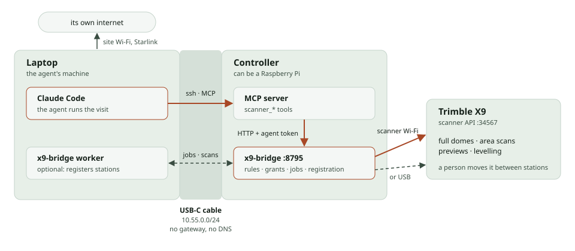

What one laser scanner and an agent can do on your site
An AI agent runs a Trimble X9 through an open bridge: it plans the stations, checks every scan, registers the site as it goes, and turns the result into numbers and drawings. Here is what that covers today, and what doesn't yet.
Ready works, with a public example to look at
Close the parts work; needs a report, a recipe or a public example
Roadmap needs a new capability
Building construction 8
- ReadyCheck walls for plumb and flatness against your tolerance, with a heat map of every face
- CloseMeasure every window and door opening for the fabricator, with an uncertainty per openingWorks in the field; public example to come
- CloseCheck slab flatness and level before flooringSame ground analysis as outdoors; no public indoor example yet
- CloseTrack weekly progress from the same stationsVisits compare when they share a frame; change maps work for the ground
- CloseRecord walls before drywall closes them: pipes, conduit and studs to find later
- CloseProduce a measured plan of an existing building for renovation designWall plans export to DXF and points to LAS; interiors not shown yet
- RoadmapCompare as-built against your design model, wall by wall
- RoadmapCheck scanned ducts and beams against the planned MEP routes
Civil and site work 7
- ReadyMap roads and parking for bumps, ruts and where water will stand
- CloseMeasure stockpile volumesVolume arithmetic checked on a planted pile; no real pile scanned yet
- CloseMeasure cut and fill between two visits
- CloseWatch retaining walls and embankments for lean or slumping over time
- CloseCut cross-sections of channels and culverts for capacitySections work; see the heights page
- RoadmapSurvey bridge decks, girders and clearances, year over year
- RoadmapMeasure overhead line and pole clearances over roads
Existing buildings and facilities 5
- ReadyDocument a whole site in one registered frame, with a live map as you go
- ReadyMeasure building heights, roof edges and sections through the site
- CloseMap facade condition: bulges, spalling and where to look closer
- CloseCheck accessibility: door widths, ramp slopes and clearances
- CloseRecord a site before and after storm or flood damage
How it works

- On site: a person carries the scanner and says yes once. The agent asks for each scan, looks at what it saw, and proposes the next station.
- After every station: the bridge places it with the others, checks the placement with independent tests, and redraws the site map.
- Afterwards: the registered scans become reports: wall heat maps, ground and water maps, sections, CSV and DXF.
How sure: the numbers here are repeatable (stations agree with each other to a few millimetres), not yet checked against an independent measurement such as a tape, a level or a total station. Each page says what was and wasn't checked. Topographic and boundary work that needs a licensed surveyor's stamp still does: these results support that work, they don't replace it.
Code and docs
- trimble-x9-bridge: the bridge, registration and reports; build a field kit from a fresh Raspberry Pi
- TrimbleX9-mcp: the agent's tools, and how the person stays in charge
- trimble-tzf: reads the scanner's files
- This site's source
Every picture on this site comes from a public colour scan of an administration building: 19 stations, replayed through the same bridge the field kit runs.